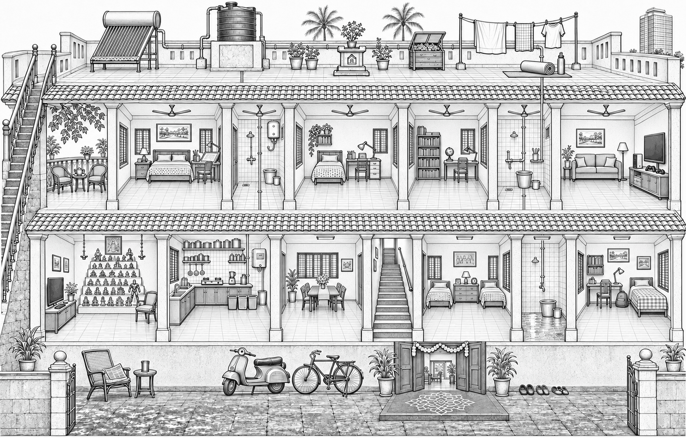

Sustainability · Assignment 1 · NIFT Mumbai M.Des Sem III

Where the day rubs, and a fix this family can actually reach: free schemes, small rupee amounts, people already in their lives. Click a card to see the moment.
One Thursday in Malleshwaram
Six people, three generations, one house on 15th Cross